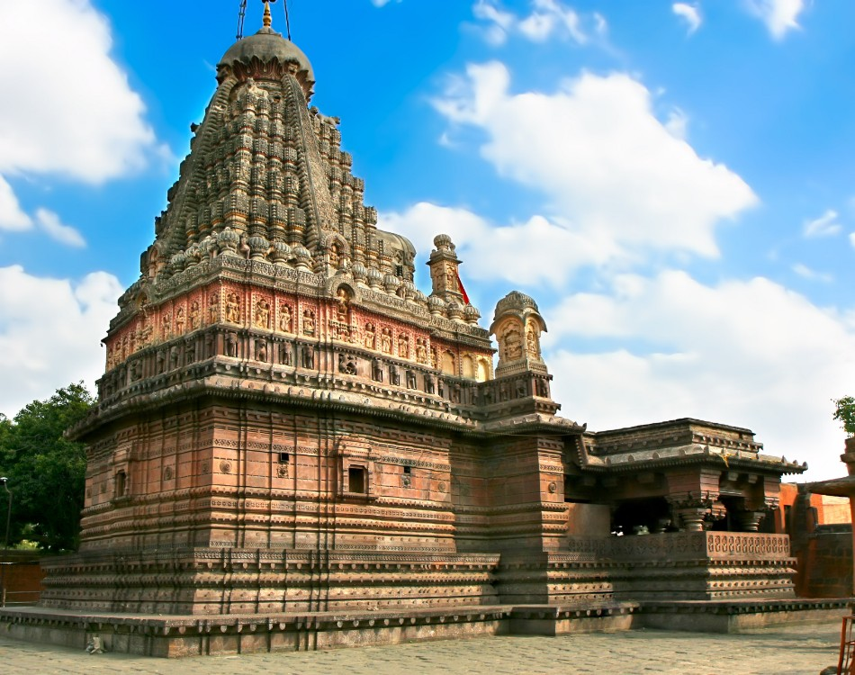

Attractions Near Ajanta

Ellora Caves
A nearby UNESCO World Heritage site known for its impressive rock-cut temples and monasteries.

Grishneshwar Temple
A prominent pilgrimage site dedicated to Lord Shiva, located near Ellora.